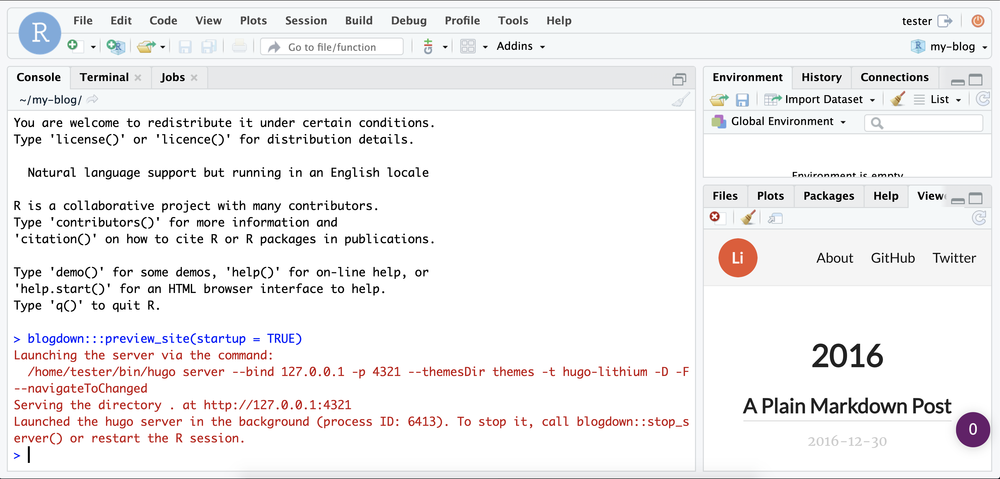
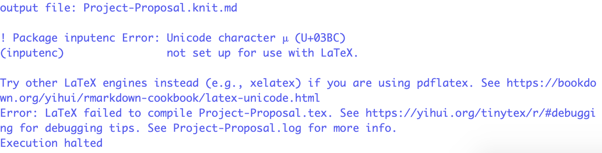
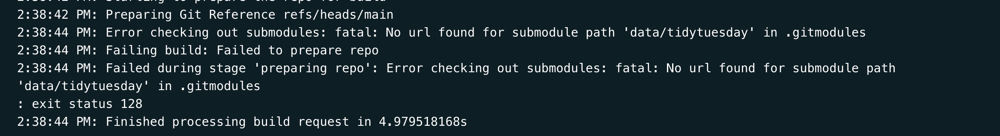

Setting up your gitHub PAT
Once the usethis package is installed, type
usethis::browse_github_pat()to open a webpage using your gitHub account (you will likely need to enter your password to continue).

This will open up a webpage.
This tutorial will walk you through the steps
Modify the file /themes/github.com/wowchemy/wowchemy-hugo-modules/wowchemy/assets/scss/custom.scss to
cat(readLines(here::here("themes", "github.com", "wowchemy", "wowchemy-hugo-modules", "wowchemy", "assets", "scss", "custom.scss")), sep = '\n')// Override this file to add your own SCSS styling.
.MathJax {
overflow-x: auto; /* Horizontally scroll long equations. */
}blogdown and gitHubSetting up a blog is easy using the R package blogdown
Create a gitHub account
gitHub will be your public code repository
gitHub will be an advertisement for your skills, knowledge, and abilities as a data scientist
Make sure the blogdown and usethis packages are installed on the server
install.packages("usethis")
install.packages("blogdown")These instructions follow those at https://happygitwithr.com/ – chapters 7, 9, and 11
Example of settingup and installing git for R [https://www.geo.uzh.ch/microsite/reproducible_research/post/rr-rstudio-git/][https://www.geo.uzh.ch/microsite/reproducible_research/post/rr-rstudio-git/]
In the terminal, type
git config --global user.name 'Jane Doe'
git config --global user.email 'jane@example.com'
git config --global --listwhere the user.name ‘Jane Doe’ is your gitHub username and the user.email ‘jane@example.com’ is your gitHub email.
ssh-keygen -t rsa -b 4096 -C "USEFUL-COMMENT"where you can change the text in “USEFUL-COMMENT” to describe what the key is. I use “statistcal-methods-server” to distinguish this from my “home-desktop” and “work-desktop” computers.
Enter file in which to save the key (/Users/jrtipton/.ssh/id_rsa):.small[
jrtipton@statistical-methods ~ $ ssh-keygen -t rsa -b 4096 -C "statistical-methods-server"
Generating public/private rsa key pair.
Enter file in which to save the key (/Users/jrtipton/.ssh/id_rsa):
Enter passphrase (empty for no passphrase):
Enter same passphrase again:
Your identification has been saved in /Users/jrtipton/.ssh/id_rsa.
Your public key has been saved in /Users/jrtipton/.ssh/id_rsa.pub.
The key fingerprint is:
SHA256:ki0TNHm8qIvpH7/c0qQmdv2xxhYHCwlpn3+rVhKVeDo USEFUL-COMMENT
The key's randomart image is:
+---[RSA 4096]----+
| o+ . . |
| .=.o . + |
| ..= + + |
| .+* E |
| .= So = |
| . +. = + |
| o.. = ..* . |
| o ++=.o =o. |
| ..o.++o.=+. |
+----[SHA256]-----+]
Adding the ssh key to the agent
Make sure the ssh agent is running by typing in the terminal:
eval "$(ssh-agent -s)"which should return something like:
Agent pid 59566ssh-add ~/.ssh/id_rsaget out your SSH key using RStudio
Go to Tools > Global Options…> Git/SVN. If your key pair has the usual name, id_rsa.pub and id_rsa, RStudio will see it and offer to “View public key”. Do that and accept the offer to copy to your clipboard. If your key pair is named differently, use another method.
Highlight and copy the text of the key making sure to copy the key starting with ssh-rsa
If there is no “View public key” option, you can go to the terminal and type
cat ~/.ssh/id_rsaIn theory, we’re done! On the server you can type in the terminal
ssh -T git@github.comto test your connection to GitHub (answer yes to continue). If you’re not sure what to make of the output, see the link for details. Of course, the best test is to work through the realistic usage examples elsewhere in this guide.
To access your gitHub repository, you will need a personal access token (PAT) – see here for details about how to set this up as this is what I based the following tutorial on.
usethis packageinstall.packages("usethis")Once the usethis package is installed, type
usethis::browse_github_pat()to open a webpage using your gitHub account (you will likely need to enter your password to continue).
This will open up a webpage.
On this webpage is a form to create your PAT with reasonable settings. Give the PAT a nickname and click “Generate token” and the token will be displayed.
The token is a string of 40 random letters and digits. Make sure you copy this token to your clipboard as this is the last time you will be able to see it. You can copy by clicking on the clipboard symbol.

Once you have generated a gitHub PAT and copied it to your clipboard, we will add the PAT to your .Renviron file. The goal is to add the following line in your .Renviron file:
GITHUB_PAT=XXXXXwhere the XXXX is the PAT copied from github. The .Renviron file is a hidden file that lives in your home directory and contains variables for R to load on startup.
The .Renviron file can be edited in R using the usethis package. In R type
usethis::edit_r_environ()Your .Renviron file should pop up in your editor. Add your GITHUB_PAT as above,
GITHUB_PAT=XXXwhere the XXXX is the PAT copied from the GitHub site with a line break at the end of the file save the .Renviron file and close it. If questioned, YES you do want to use a filename that begins with a dot .. Note that, by default, most dotfiles are hidden in the RStudio file browser, but .Renviron should always be visible.
Restart R (Session > Restart R in the RStudio menu bar), as environment variables are loaded from .Renviron only at the start of an R session.

Check that the PAT is now available like so:
usethis::git_sitrep()You should see the following line in the output:
Personal access token: '<found in env var>'
Now commands you run from the terminal and from RStudio, which consults GITHUB_PAT by default, will be able to access GitHub repositories which you have access to.


Give the repository a name
If you want, add a README to the repository
Click the green “create repository button”
name: clone-repo # Cloning your gitHub repository
Once you have setup your PAT and created a repository on gitHub, you can clone your created repository to the server.
Open up the gitHub webpage for your repository and click on the green button that says XXX. Make sure you have the SSH tab highlighted and click on the clipboard symbol to copy the address into your clipboard.

Open up the terminal and type
git clone https://github.com/jtipton25/my-blog.gitwhere the exact site will depend on your gitHub username and repository name.
Now that you have cloned the repository from gitHub, we will create a project.
First, we make sure the blogdown library is installed (install.packages("blogdown")).
Next we create a blog using
blogdown::new_site(dir = "~/my-blog")where “~/my-blog” is the filepath for the repository you cloned from gitHub.
cd ~/my-bloggit statusOn branch main
Your branch is up-to-date with 'origin/main'.
Untracked files:
(use "git add <file>..." to include in what will be committed)
.gitignore
config.toml
content/
index.Rmd
my-blog.Rproj
static/
themes/
nothing added to commit but untracked files present (use "git add" to track)git add .-a) with a message (-m to gitHub withgit commit -a -m 'first blog post'git push If you get an error in the git push like this:
error: cannot run rpostback-askpass: No such file or directory
Username for 'https://github.com': type ctrl-c to exit and check the remote using the terminal with
git remote -vhttps://github.com/USERNAME/REPOSITORY.gitgit@github.com:USERNAME/REPOSITORY.git
Then, change the remote URL to SSH using
git remote set-url origin git@github.com:jtipton25/my-blog.gitwhere git@github.com:jtipton25/my-blog.git is changed to what your SSH remote is.
Awesome! We have a live blog. Now, all you have to do is make changes on the server, push them to gitHub, and then wait for Netlify to deploy the changes for your blog to automatically update.
Adding a .Rproj file to the blog



Changing the site configuration
The config.toml file changes global settings for your site. Let’s open this file in RStudio and change the title, gitHub url and, if you want, your Twitter url (Make sure these accounts are professional if you link to them!!!)
The content folder has a file about.md. Edit this file to tell us a little about yourself.
You can update the site locally (i.e., on the server, your own computer, but not on the website) using blogdown::serve_site()
You can create a new post using blogdown::new_post(title = "A first post")
content/post/ directory so you can edit them there (or delete the default posts)Before you push to gitHub to deploy your site, you can use blogdown::build_site() then push the repository to gitHub to update the site.
More details are available at https://bookdown.org/yihui/blogdown/
tinytex package for converting a .Rmd file to a pdf. Typeinstall.packages("tinytex")then
tinytex::install_tinytex()to get this installed
resume-example.Rmd, svm-latex-resume.tex, and rick-martel-crop.jpg – or any images you added as well) to the static folder in your blog directory.When I tried to compile the .Rmd file to pdf on the server, I got a compile error. To fix this, I ran
rmarkdown::render("./static/resume-master/resume-example.Rmd")where the file path was where I uploaded the .Rmd file for the resume.
.Rmd everytime I changed my resume fileconfig.toml file where the path of the url is the same path as where the resume-example.Rmd file was (without the /static/ directory but with a leading ""):[[menu.main]]
name = "Resume"
url = "/resume-master/resume-example.pdf"R and add the file build.R that contains the following lines:blogdown::build_dir('static')static directory (your resume) and build these files for hosting on the website when you run blogdown::build_site()blogdown::build_site()to build the pdf document and
blogdown::serve_site()to allow for interactive editing and to have your resume added to the blog
.csv files), you need to tell blogdown to ignore the .csv files. To do this, open the config.toml file and modify the line:ignoreFiles = ["\\.Rmd$", "\\.Rmarkdown$", "_cache$", "\\.knit\\.md$", "\\.utf8\\.md$"]by adding "\\.csv$" to tell blogdown to ignore .csv files
so that the ignoreFiles line is now
ignoreFiles = ["\\.Rmd$", "\\.Rmarkdown$", "_cache$", "\\.knit\\.md$", "\\.utf8\\.md$", "\\.csv$"].Rmd to .pdf, you don’t have tinytex installed.
Run the following to resolve this issue
install.packages("tinytex")
tinytex::install_tinytex()If you get the error shown below when knitting a .Rmd to .pdf, you have a unicode character in your .Rmd

To find the unicode character(s), open the find bar using ctrl-f (cmd-f on Mac) or using the menu bar: edit -> find. Make sure the Regex box is checked and search for [^\x00-\x7F]

Find the unicode character and delete it for the .Rmd document to compile
In the R console, run
blogdown::build_site()Then open up a terminal window and check the git status
git statusThere should be some un-tracked directories that end in the folder /figure-html/. Add these to git using
git add path/to/figure-htmland commit with
git commit -m "commit message"In the R console, run
blogdown::build_site()Then open up a terminal window and check the git status
git statusThere should be some un-tracked directories that end in the folder /figure-html/. Add these to git using
git add path/to/figure-htmland commit with
git commit -m "commit message"To Do: add screenshot of build error message
.csv files), you need to tell blogdown to ignore the .csv files. To do this, open the config.toml file and modify the line:ignoreFiles = ["\\.Rmd$", "\\.Rmarkdown$", "_cache$", "\\.knit\\.md$", "\\.utf8\\.md$"]by adding "\\.csv$" to tell blogdown to ignore .csv files
so that the ignoreFiles line is now
ignoreFiles = ["\\.Rmd$", "\\.Rmarkdown$", "_cache$", "\\.knit\\.md$", "\\.utf8\\.md$", "\\.csv$"].csv files), the Netfliy build might fail, pointing to a .csv file
To fix this, you need to tell blogdown to ignore the .csv files. To do this, open the config.toml file and modify the line:
.small[
ignoreFiles = ["\\.Rmd$", "\\.Rmarkdown$", "_cache$", "\\.knit\\.md$", "\\.utf8\\.md$"]]
by adding "\\.csv$" to tell blogdown to ignore .csv files
so that the ignoreFiles line is now
.small[
ignoreFiles = ["\\.Rmd$", "\\.Rmarkdown$", "_cache$", "\\.knit\\.md$", "\\.utf8\\.md$", "\\.csv$"]]
blogdown to ignore the .csv files. To do this, open the config.toml file and modify the line:ignoreFiles = [..., "\\.csv$"]where the ... is all the current values in this list . Then add "tidytuesday" to tell blogdown to ignore all files in the tidytuesday and recursive directories so that the ignoreFiles line is now
ignoreFiles = [..., "\\.csv$", "tidytuesday"]/.git/ respositories in your root blog directory (typically caused by pulling data from tidytuesday)
/.git/ directory is by navigating to the root project directory in the terminal then typingfind . -type d -name '.git'which should return something like
./git
./data/tidytuesday/.gitWe have to remove the offending /.git/ directory. Do this in the terminal by typing (making sure to modify the path to the correct path returned by the find command – ./data/tidytuesday/ in the example)
rm -rf ./path/to/.gitThen we remove the directory containing the /.git/ directory we just removed from tracking by git using (notice the two --s before cached and the path returned by find )
git rm -rf --cached ./path/to/Type
git statusto confirm that the correct path has been deleted from tracking by git. Then add the deleted directory back into tracking by git with
git add ./path/to/Then commit and push. Verify that the website builds correctly on Netlify